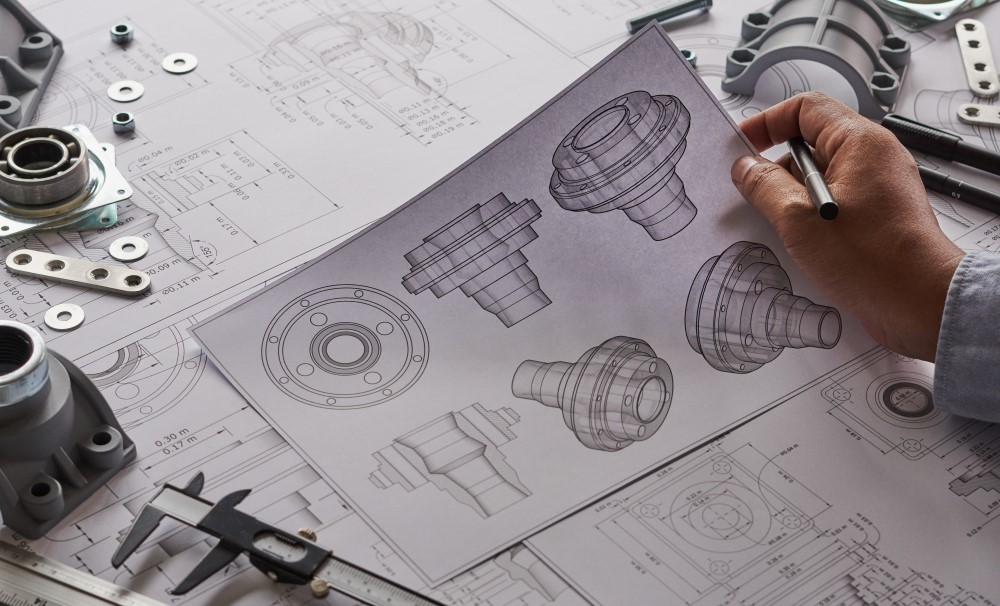

Para concorrer a uma das vagas para o Ensino Médio regular ou em diferentes modalidades e para os cursos técnicos integrados ao Ensino Médio, o candidato dever ter concluído o Ensino Fundamental. Quem pretende fazer apenas o Ensino Técnico, precisa ter concluído ou estar cursando a partir do segundo ano do Ensino Médio.
As inscrições para o processo seletivo (Vestibulinho) das Escolas Técnicas Estaduais (Etecs) do Centro Paula Souza são semestrais – exceto as do Ensino Médio e dos cursos técnicos integrados ao Ensino Médio que são anuais. A cada Vestibulinho, é preciso conferir no Manual do Candidato quais os cursos são oferecidos em cada unidade.
Inscreva-se!
10 de Outubro,
às 15 horas, exclusivamente pelo site vestibulinhoetec.com.br. O valor da taxa é de
R$ 19. A classificação será feita por meio de análise do histórico escolar.
Observação: Não haverá a realização de prova presencial ou online.
Cursos Técnicos:
Administração

O TÉCNICO EM ADMINISTRAÇÃO é o profissional que participa da gestão dos recursos mercadológicos, humanos, financeiros,
materiais e produtivos. Executa as rotinas administrativas, controla materiais, acompanha níveis de eficiência e produtividade e presta
atendimento a clientes. Trabalha em equipe, otimiza recursos, propõe inovações e adota postura ética na condução das relações e atividades.
Eixo Tecnológico: GESTÃO E NEGÓCIOS
Mercado de trabalho: Instituições públicas, privadas e do terceiro setor.
Salário do Profissional de Administração: O Conselho Federal de Administração (CFA) estabelece os seguintes valores de referência para os profissionais da área:
● R$ 2.000 para profissionais em início de carreira;
● R$ 3.500 para profissionais com mais de dois anos de experiência.
Desenvolvimento de Sistemas

O TÉCNICO EM DESENVOLVIMENTO DE SISTEMAS é o profissional que analisa e projeta sistemas. Constrói, documenta, realiza testes e mantém sistemas de informação. Utiliza ambientes de desenvolvimento e linguagens de programação específica. Modela, implementa e mantém bancos de dados.
Eixo Tecnológico: INFORMAÇÃO E COMUNICAÇÃO
Mercado de trabalho: Empresas e departamentos de desenvolvimento de sistemas em organizações governamentais e não governamentais, podendo também atuar como profissional autônomo.
Salário do Profissional de Desenvolvimento de Sistemas: A pesquisa do site de empregos Catho indica que um programador ganha em média:
● R$ 2.461 para profissionais em início de carreira;
● R$ 5.977 para profissionais com mais de dois anos de experiência.
Mecânica

O TÉCNICO EM MECÂNICA é o profissional que elabora projetos mecânicos e sistemas automatizados. Planeja, aplica e controla procedimentos de instalação e de manutenção mecânica de máquinas e equipamentos. Desenvolve e controla processos de fabricação e montagem de conjuntos mecânicos. Aplica técnicas de medição e ensaios. Especifica materiais para construção mecânica. Elabora documentação, realiza compras e vendas técnicas e cumpre normas e procedimentos de segurança no trabalho e de preservação ambiental.
Eixo Tecnológico: CONTROLE E PROCESSOS INDUSTRIAIS
Mercado de trabalho: indústrias de produtos de metal, de artigos de borracha e plástico, fábricas de máquinas, equipamentos e componentes mecânicos, aparelhos e materiais elétricos e de equipamentos de instrumentação; laboratórios de Controle de Qualidade, de manutenção e pesquisa no setor produtivo mecânico; prestadoras de serviços.
Salário do Profissional de Técnico Mecânico: A pesquisa do site de empregos Catho indica que um Técnico Mecânico ganha em média:
● R$ 2.000 para profissionais em início de carreira;
● R$ 5.200 para profissionais com mais de três anos de experiência.